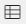

Элементы приложения можно отображать в виде плитки, таблицы или канбан-доски. Последняя опция доступна, если у приложения настроены статусы. Способ отображения задаётся на этапе создания приложения или позже в правом верхнем углу страницы приложения.

Вы можете определить, как будут выглядеть таблица, плитки или канбан-доска. Например, выбрать, какие поля элемента отобразятся, сортировать строки и плитки по параметрам, изменить размер плиток и т. д. Настройки делятся на два типа:
- глобальные — администратор системы задаёт настройки, которые применяются по умолчанию для всех сотрудников и экспортируются вместе с приложением;
- персональные — любой пользователь может задать параметры для себя. При этом всегда можно вернуться к глобальным настройкам, нажав кнопку По умолчанию.
Администратор может переключаться между глобальными и персональными параметрами в окне настройки таблицы, плиток или канбан-доски.

Подробнее о параметрах отображения и их настройке читайте в разделах «Настройка таблицы» и «Настройка плитки», а также в статье «Канбан-доска».
Рассмотрим каждый из способов отображения.
Таблица
При выборе данного способа отображения  элементы приложения будут располагаться в виде настраиваемой таблицы. Элементы, по которым есть просроченные задачи в бизнес‑процессах, отмечаются красной точкой.

Чтобы изменить ширину колонки, перетащите правую границу её заголовка до нужной ширины.
Вы можете отсортировать элементы в таблице по одному из параметров приложения. Для этого нажмите на название столбца. Сортировка доступна по системным полям, таким как Индекс и Дата создания, а также по пользовательским свойствам, для которых администратор системы включил опцию Поиск и сортировка по полю.

Настройка таблицы
Вы можете выбрать свойства элемента, которые будут отображаться в таблице, и сортировать записи по параметрам.
Нажмите на значок шестерёнки в правом верхнем углу страницы приложения и выберите пункт меню Настройка таблицы.

Откроется окно настройки таблицы.

- Показывать свойства — выберите свойства элемента приложения, которые отобразятся в таблице. Для добавления нажмите значок плюса рядом с названием свойства, а для удаления — значок минуса.
Особенности отображения в таблице полей типа Приложение (несколько)
Вы можете добавить в таблицу поле типа Приложение (несколько). Тогда напротив каждого элемента текущего приложения вы увидите ссылки на связанные элементы другого приложения. Если таких элементов много, отобразятся ссылки на первые 10 из них и их общее количество.
Однако данные по всем связанным элементам выбранного приложения всё равно загружаются, что может создавать дополнительную нагрузку на систему. Чтобы ускорить отображение и снизить нагрузку, администратор системы может включить жадную загрузку данных. В этом случае данные загружаются только по первым 10 элементам, и их общее количество не указывается. |

- Сортировать — из выпадающего списка выберите параметр, по которому будет производиться сортировка при открытии страницы приложения. Доступны системные поля приложения, а также свойства, для которых администратор системы включил опцию Поиск и сортировка по полю. После выбора поля укажите тип сортировки: по возрастанию или по убыванию;
- Дополнительно сортировать — выберите параметр, по которому будет осуществляться вторичная сортировка элементов. Например, если элементы приложения изначально сортируются по названию и среди них есть одноимённые элементы, вы можете установить для них дополнительную сортировку по дате создания. Для выбора доступны системные поля, а также свойства с включённой опцией Поиск и сортировка по полю;
- Автоматически обновлять список элементов — включите опцию, чтобы список обновлялся при добавлении новых элементов, а также внесении изменений в существующие элементы.
После заполнения всех полей нажмите на кнопку Сохранить.
Плитка
При выборе этого способа отображения  элементы приложения будут показываться в виде плиток с определённым набором полей. Элементы, по которым есть просроченные задачи в бизнес‑процессах, отмечены красной точкой.
элементы приложения будут показываться в виде плиток с определённым набором полей. Элементы, по которым есть просроченные задачи в бизнес‑процессах, отмечены красной точкой.

Настройка плиток
Вы можете выбрать размер плиток, сортировать их по разным параметрам, а также настроить отображение системной информации.
Для этого нажмите на значок шестерёнки в правом верхнем углу страницы приложения и в выпадающем списке выберите пункт Настройка плиток.

Откроется окно настройки.

- Размер — выберите ширину карточки элемента приложения (Широкая, Средняя или Узкая);
- Сортировать — выберите параметр, по которому будет производиться сортировка. Доступны системные поля приложения, а также свойства, для которых администратор системы включил опцию Поиск и сортировка по полю. После выбора поля укажите тип сортировки: по возрастанию или по убыванию;
- Дополнительно сортировать — выберите параметр, по которому будет осуществляться вторичная сортировка элементов. Например, если элементы приложения изначально сортируются по названию и среди них есть одноимённые элементы, вы можете установить для них дополнительную сортировку по дате создания. Для выбора доступны системные поля, а также свойства с включённой опцией Поиск и сортировка по полю;
- Показывать системную информацию — включите опцию, чтобы в карточке элемента приложения отображалась дополнительная информация об авторе и дате создания элемента;
- Автоматически обновлять список элементов — включите опцию, чтобы список обновлялся при добавлении новых элементов, а также внесении изменений в существующие элементы;
- Настройка карточки — укажите свойства элемента приложения, которые отобразятся на плитках, нажав + Поле. Чтобы удалить свойство, нажмите значок минуса справа от его названия.
Особенности отображения на плитках полей типа Приложение (несколько)
Вы можете добавить в настройки плиток поле типа Приложение (несколько). Тогда в карточке каждого элемента текущего приложения вы увидите ссылки на связанные элементы другого приложения. Если таких элементов много, отобразятся ссылки на первые 10 из них и их общее количество.
Однако данные по всем связанным элементам выбранного приложения всё равно загружаются, что может создавать дополнительную нагрузку на систему. Чтобы ускорить отображение и снизить нагрузку, администратор системы может включить жадную загрузку данных. В этом случае данные загружаются только по первым 10 элементам, и их общее количество не указывается. |
Для сохранения внесенных изменений нажмите на кнопку Сохранить.
Канбан-доска
Если у приложения настроены статусы, вы можете расположить элементы этого приложения в виде канбан‑доски. Чтобы просмотреть элементы приложения с одинаковым статусом, нажмите на название колонки в канбан‑доске. Элементы отобразятся в виде таблицы в новом окне. Подробнее о настройке и использовании этого режима отображения читайте в статье «Канбан‑доска».

Поиск и фильтры
Для каждого режима отображения доступен поиск элементов.
Строка поиска, расположенная в верхней части окна, показывает общее количество элементов в приложении и количество элементов с просроченными задачами.
По умолчанию поиск производится по полю Название. Чтобы использовать другие параметры, например, найти элементы с просроченными задачами, нажмите на значокв строке поиска.
Откроется окно для поиска по параметрам. Элемент можно найти:
- по основным полям приложения;
- по задачам, назначенным для работы с элементом приложения;
- по системным полям.

Вы можете выбрать как один параметр, так и несколько одновременно. Параметры поиска, которые вы планируете использовать многократно, можно сохранить как фильтр.
Для полей типа Пользователи и Приложение вы можете выбрать опцию Не заполнено, чтобы найти элементы приложения с незаполненными данными.
Кроме того, используя Поиск по параметрам, можно просмотреть удаленные элементы приложения. Для этого нажмите на ссылку Удаленные в правом верхнем углу формы.
Подробнее о работе с поиском элементов приложения читайте в статье «Поиск и фильтры».
Снижение нагрузки при отображении связанных элементов
В поле типа Приложение (несколько) можно добавлять ссылки на элементы другого приложения. Такое поле можно внести в список отображаемых свойств в настройках таблицы, плиток или канбан‑доски. Тогда при открытии страницы приложения пользователь увидит по каждому элементу список ссылок на элементы другого приложения, указанные в его карточке.
Если таких элементов много, отобразятся только первые 10 из них. Однако по умолчанию данные загружаются обо всех ссылках из каждого отображённого элемента. Получение этих сведений может приводить к высокой нагрузке на базу данных и снижению производительности системы.
Администратор системы может включить жадную загрузку данных связанных элементов. Тогда выполняется всего один запрос в базу данных и загружается информация только о первых 10 ссылках из каждого элемента на странице приложения. Настройка включается на уровне компании и применяется ко всем приложениям.
Чтобы использовать жадную загрузку, включите фича-флаг eagerLoadAppItemsEnabled. Подробнее читайте в статьях «Изменение параметров On‑Premises Enterprise» и «Изменение параметров On‑Premises Standard». Если вы используете поставку SaaS, для включения фича‑флага обратитесь к вашему менеджеру ELMA365.
Способ получения данных о ссылках на элементы влияет на их отображение в таблице, на плитках и на канбан‑доске:
- при загрузке данных по умолчанию пользователь увидит количество элементов, которые не показаны:

- при включении жадной загрузки пользователь не сможет узнать общее количество элементов в поле:

При любом способе получения данных пользователь сможет просмотреть все ссылки в поле, открыв карточку элемента.